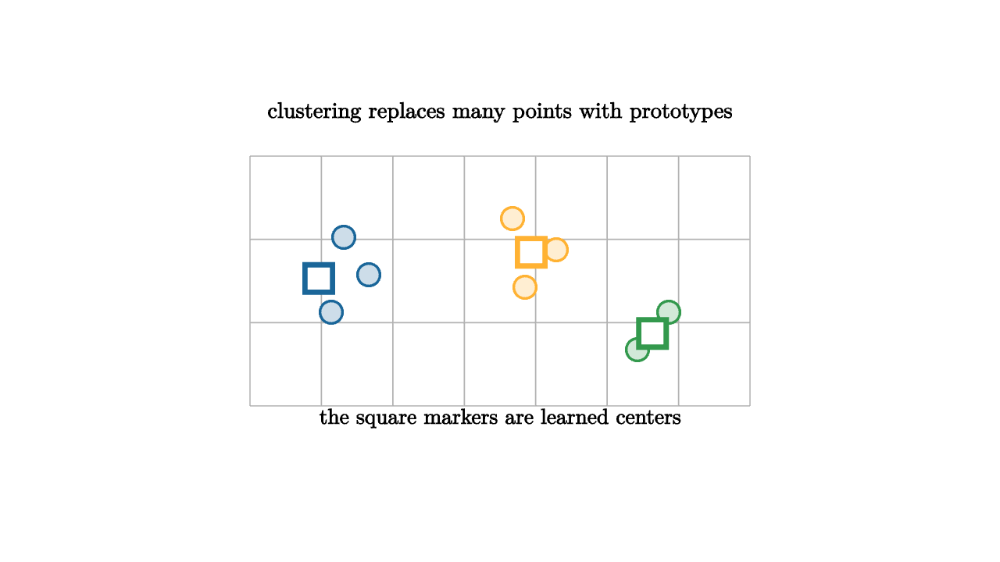

Imagine sorting a pile of mixed screws, washers, and bolts after a repair. You may begin without labels. The long pieces naturally collect in one region, the flat rings in another, and the tiny screws in a third. Clustering is the data version of this act. It asks whether a cloud of points contains groups that can be summarized by a few prototypes.
A prototype is a representative point. In $k$-means clustering, each data point is assigned to the nearest center, then each center moves to the mean of the points assigned to it. The objective is
This equation says that a good set of centers keeps every point close to its assigned prototype.

source
let soft = |col, amount| lerp(WHITE, col, amount)
mesh scene = [
center{1.35u} Text("clustering replaces many points with prototypes", 0.64),
stroke{LIGHT_GRAY, 1} LineGrid([-2, 2, 8], [-1, 1, 4], 1),
center{1.25l + 0.35u} fill{soft(BLUE, 0.22)} stroke{BLUE, 2} Circle(0.09),
center{1.05l + 0.05u} fill{soft(BLUE, 0.22)} stroke{BLUE, 2} Circle(0.09),
center{1.35l + 0.25d} fill{soft(BLUE, 0.22)} stroke{BLUE, 2} Circle(0.09),
center{0.1r + 0.5u} fill{soft(ORANGE, 0.22)} stroke{ORANGE, 2} Circle(0.09),
center{0.45r + 0.25u} fill{soft(ORANGE, 0.22)} stroke{ORANGE, 2} Circle(0.09),
center{0.2r + 0.05d} fill{soft(ORANGE, 0.22)} stroke{ORANGE, 2} Circle(0.09),
center{1.35r + 0.25d} fill{soft(GREEN, 0.22)} stroke{GREEN, 2} Circle(0.09),
center{1.1r + 0.55d} fill{soft(GREEN, 0.22)} stroke{GREEN, 2} Circle(0.09),
center{1.45l + 0.02u} fill{WHITE} stroke{BLUE, 4} Square(0.22),
center{0.25r + 0.23u} fill{WHITE} stroke{ORANGE, 4} Square(0.22),
center{1.22r + 0.42d} fill{WHITE} stroke{GREEN, 4} Square(0.22),
center{1.1d} Text("the square markers are learned centers", 0.62)
]The algorithm has a simple rhythm: assign, move, repeat. The assignment step draws Voronoi cells around the centers. The movement step places each center at the average of its cell. The process continues until assignments stop changing or the objective barely improves.
source
let soft = |col, amount| lerp(WHITE, col, amount)
"Guess Centers"
mesh scene = [
center{1.3u} Text("start with tentative prototypes", 0.62),
center{1.25l + 0.25u} fill{soft(BLUE, 0.18)} stroke{BLUE, 2} Circle(0.09),
center{0.95l + 0.2d} fill{soft(BLUE, 0.18)} stroke{BLUE, 2} Circle(0.09),
center{0.45r + 0.35u} fill{soft(ORANGE, 0.18)} stroke{ORANGE, 2} Circle(0.09),
center{0.15r + 0.05d} fill{soft(ORANGE, 0.18)} stroke{ORANGE, 2} Circle(0.09),
center{1.35r + 0.45d} fill{soft(GREEN, 0.18)} stroke{GREEN, 2} Circle(0.09),
center{0.75r + 0.65d} fill{soft(GREEN, 0.18)} stroke{GREEN, 2} Circle(0.09),
center{1.55l + 0.7d} fill{WHITE} stroke{BLUE, 4} Square(0.22),
center{0.1r + 0.75u} fill{WHITE} stroke{ORANGE, 4} Square(0.22),
center{1.55r + 0.1u} fill{WHITE} stroke{GREEN, 4} Square(0.22)
]
play Fade(0.8)
"Assign"
scene = [
center{1.3u} Text("nearest-center regions create a partition", 0.62),
stroke{BLUE, 2.5} Line(0.95l + 0.95d, 0.25l + 0.95u),
stroke{ORANGE, 2.5} Line(0.45r + 0.95u, 0.65r + 0.95d),
stroke{GREEN, 2.5} Polyline([0.05r + 0.95d, 0.45r + 0.2d, 1.55r + 0.35u])
]
play Write(0.9)
"Move"
scene = [
center{1.3u} Text("centers move to cluster averages", 0.62),
stroke{BLUE, 3} Arrow(1.55l + 0.7d, 1.08l + 0.05d),
stroke{ORANGE, 3} Arrow(0.1r + 0.75u, 0.22r + 0.15u),
stroke{GREEN, 3} Arrow(1.55r + 0.1u, 1.05r + 0.48d)
]
play Trans(0.8)The picture is friendly, but the modeling choices deserve attention. The number $k$ is chosen by the analyst. The distance metric decides what counts as similar. Scaling changes the geometry. If one feature is measured in dollars and another in years, Euclidean distance may mostly listen to dollars. Standardizing features can be the difference between a meaningful cluster and a unit conversion accident.
Clustering also compresses. Each point is replaced by a cluster label and a residual from the center. This is why clustering is useful for data summaries, image quantization, customer segmentation, and exploratory plots. It creates a small vocabulary for a large cloud.
The method can also create an illusion of categories. A smooth gradient can be chopped into clusters because the algorithm was asked to produce clusters. A crescent-shaped group may be split badly by $k$-means because its cells are built from nearest centers. Density methods, spectral clustering, and hierarchical clustering handle different shapes by changing the geometry of the problem.
A good clustering lesson ends with inspection. Plot the centers. Look at examples near each center and examples near the boundary. Compare results under different scales and different choices of $k$. Clustering is most valuable when the prototypes become a useful conversation with the data instead of a final label stamped on every point.